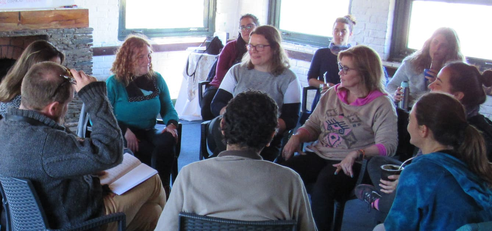

GRUPOS
Brindamos respuestas integrales a los desafíos en el trabajo con grupos humanos, para superar las limitaciones comunicacionales, colaborar con el logro de objetivos compartidos y contribuir a la construcción de espacios saludables.
Promovemos procesos de crecimiento desde lo personal, a lo grupal, para quienes buscan vivir, trabajar y relacionarse desde un lugar motivador.
Creemos en un modelo de liderazgo consciente, que cuida al equipo y sus logros, a través de un camino humanista y empático.
Es una mirada integradora, que cultiva el terreno fértil donde pueden emerger modos más sostenibles de relación, convivencia y productividad.
Gestalt para liderar equipos PRESENCIAL
Desarrollar el liderazgo
Fortalecer las competencias para comprender el fenómeno grupal e intervenir en equipos, mejorando su desempeño, en un clima de respeto y confianza. Con un enfoque práctico, los aprendizajes pueden ser aplicados desde la primera clase en el entorno laboral.
Beneficios para la organización
Potenciar las competencias de liderazgo, supervisión y gestión de equipos, y ampliar la visión estratégica del rol para enfocarse con eficacia en los temas clave. Motivar a las personas participantes y estimular su sentido de pertenencia a la organización.
¿A quién va dirigido?
Este curso te puede resultar especialmente útil, si:
- Liderás o facilitás grupos de trabajo
- Buscás mejorar el trabajo en equipo
- Trabajás en áreas como gestión humana, educación, salud, trabajo social, tecnología, calidad, consultoría, coaching.
- Te interesa entender la complejidad de los fenómenos grupales y aumentar tu capacidad para contribuir al logro de objetivos propuestos
- Querés aumentar tu autoconocimiento y mejorar tus vínculos
- Creés que un equipo puede ser un espacio saludable y productivo
Serás capaz de:
- Integrar una mirada sistémica sobre los procesos grupales
- Identificar y valorar el impacto de tu presencia en un equipo
- Desarrollar la capacidad de observar y comprender lo que sucede en un grupo/equipo como un todo, que es más que la sumatoria de individualidades
- Conocer los modelos de proceso e intervención grupal, ejercitarlos y aplicarlos para liderar, intervenir y participar
- Reconocer las fuerzas intervinientes en un proceso de cambio desde una posición de mayor apertura y escucha, habilitando la expresión de las diferentes visiones
Dedicación
Carga horaria total 20 horas, en dos modalidades:
- 5 encuentros con frecuencia semanal, de 4 hs. cada uno
- 2 jornadas en días sábados consecutivos, de 9 hs. cada una
Equipo docente
Mabel Hopenhaym
Gustavo Nisivoccia
Alicia López
Bettina Link
InscribirseFacilitación gestalt de grupos PRESENCIAL
Desarrollar equipos
Facilitar un trabajo grupal donde los miembros aprendan de sus experiencias, fortaleciendo la confianza, pertenencia y colaboración para trabajar de manera más efectiva y saludable desde un enfoque sistémico.
Cultivar un liderazgo que promueva la escucha y apertura, favoreciendo una comunicación honesta y respetuosa para alcanzar consensos. Una formación teórico-práctica, vivencial y grupal, para aprender activamente.
Beneficios para la organización
Potenciar las habilidades para el desarrollo de equipos. Promover modos sostenibles de convivencia y productividad, y formas de relacionamiento que mejoren el clima laboral. Motivar a las personas participantes y estimular su sentido de pertenencia a la organización.
Esta formación es ideal para ti, si:
- Liderás o integrás grupos o equipos en cualquier rama de actividad
- Trabajás en áreas como gestión humana, educación, salud, trabajo social, tecnología, calidad, consultoría, coaching
- Buscás desarrollar tus competencias para facilitar procesos de cambio
- Querés estimular la cooperación y el trabajo en equipo
- Creés que un equipo puede ser un espacio productivo y saludable
- Deseás ahondar en tu autoconocimiento y mejorar tu forma de ser y estar en grupos
Este curso te permitirá:
- Conocer metodologías aplicables y marcos teóricos que te permitan una comprensión amplia de las dinámicas grupales y sistémicas, para formular hipótesis y desarrollar tu capacidad de intervenir efectivamente
- Adquirir y practicar herramientas que facilitan la comunicación en los grupos para apoyar procesos de transformación y creatividad
- Mejorar tu capacidad de trabajar con las diferencias y colaborar para la articulación de acuerdos y consensos
- Utilizar tu presencia en forma consciente y activa como parte de tus recursos personales, prestando atención a tus propias sensaciones, sentimientos y pensamientos
- Experimentar un aprendizaje práctico y vivencial para ampliar tu capacidad de darte cuenta y percibir lo que sucede, y desarrollar tu estilo de trabajo con grupos y equipos
Dedicación
- Carga horaria total: 80 horas
- Un sábado por mes, de mayo a diciembre, de 09:00 a 18:00 horas
- Trabajos en subgrupos para presentación de material bibliográfico y para elaboración de un caso de estudio
- Preparación y realización de taller de práctica externa
Equipo docente
Mabel Hopenhaym
Gustavo Nisivoccia
Alicia López
Bettina Link
Ediciones
- Una edición anual
¿Tu organización necesita una solución a medida?
Ver todas las soluciones Hacenos tu consulta